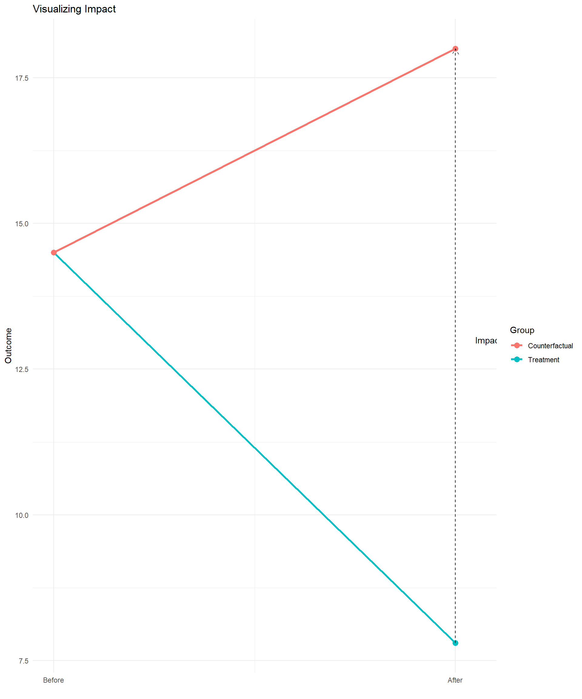
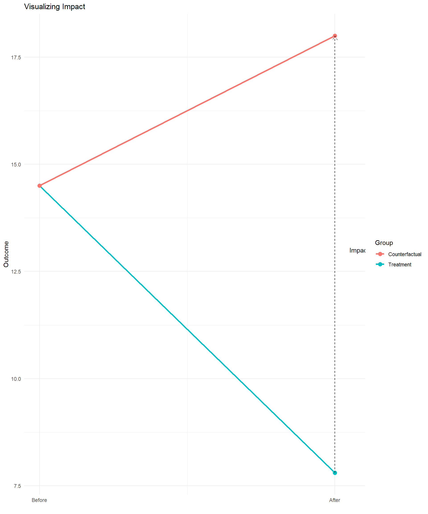

Econometrics with R

We cannot observe the same unit in both treatment and control states simultaneously.
Outcome Variable:
waste_management_costs: Waste managament incurred monthly per industry (USD)Treatment Variables:
treatment_zone: Area selected for program (0/1)enrolled: Industry enrolled in program (0/1)eligible: Industry eligible for program (0/1)Other Variables:
round: Survey round (0=baseline, 1=follow-up)efficiency_index: Score based on industry characteristicsrecycling_center_distance: Distance to nearest recycling centreExperimental Methods:
Quasi-Experimental Methods:
Problems:
Problems:
| (1) | (2) | |
|---|---|---|
| + p < 0.1, * p < 0.05, ** p < 0.01, *** p < 0.001 | ||
| (Intercept) | 14489.694*** | 22304.911*** |
| (145.961) | (337.418) | |
| round | -6649.515*** | |
| (230.017) | ||
| enrolled | -14464.732*** | |
| (330.470) | ||
| Num.Obs. | 5929 | 4960 |
| R2 | 0.211 | 0.327 |
Randomized Assignment: The gold standard for causal inference